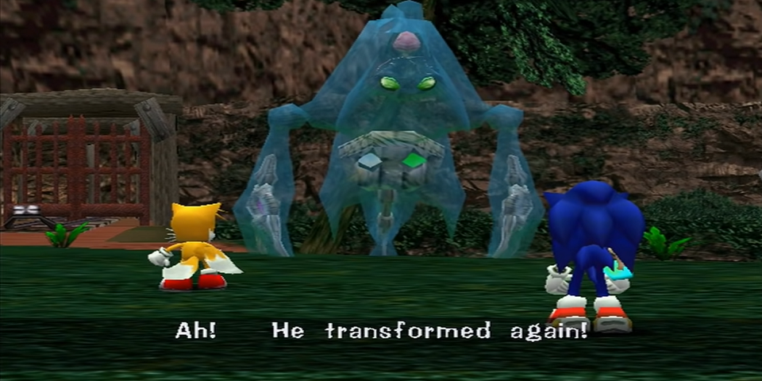
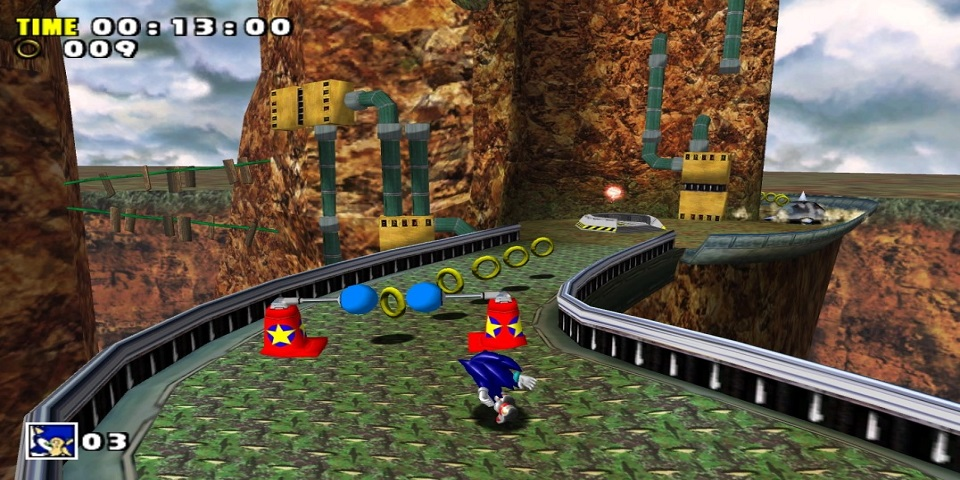

SADX - Campanha do Sonic
Chaos 0
Aparentemente é uma noite comum em Station Square, as pessoas caminham pela rua, porém toda essa tranqüilidade é interrompida quando helicópteros da polícia e viaturas atravessam correndo as ruas da cidade. Uma luz segue os helicópteros, Sonic surge no alto de um prédio. Ele desce e decide seguir a polícia e ver o que está acontecendo. Na prefeitura, a polícia fecha um cerco. Uma criatura líquida desce e os policiais abrem fogo. Porém as balas não fazem nada. A polícia recua e Sonic, que para em cima de uma viatura, decide lutar com a criatura.
Essa é a primeira luta do jogo, e é bem simples. Acerte a cabeça dele, só isso. Não adianta tentar atingi-lo quando ele estiver como poça-d'água. Após sofrer 2 hits, ele vai subir nos postes, desvie dele e o acerte pela ultima vez quando descer. Ao ser derrotado, o inimigo morre e vemos Eggman o observando a distancia, se vangloriando sobre controle do bicho de agua, o Deus da destruição. No dia seguinte, Sonic está descansando quando um barulho perturba o seu cochilo. Ele vê Tails caindo de seu avião, assim saindo para ajudar seu amigo.
Stage 01 - Emerald Coast
Essa fase é bem simples, apenas siga até o final dela e elimine os inimigos, use o Spin Dash para atravessar a fase com mais velocidade. Quando estiver na ponte com a orca, não pare de correr, continue correndo para frente ou você cairá na agua e perderá uma vida. Fora isso, a fase pode ser concluida sem muita dificuldade.
Após o resgate de Tails, Sonic pergunta o que aconteceu, e seu amigo raposa explica que estava testando um novo protótipo e mostra a Sonic a fonte de energia, uma Chaos Emerald. Tails pede para que Sonic vá com ele até sua oficina, em Mystic Ruins. Vá até Mystic Ruins usando a estaçao de trem de Station Square.
Egg Hornet
Subindo até a oficina do Tails, você é surpreendido por Eggman em seu Egg Hornet. Desvie dos golpes de broca dele, que o prenderá no chão e o ataque três vezes para vencer a luta.
Suba para a oficina do Tails e pegue a pedra verde que tem lá, ela é a chave para acessar a proxima fase. Pegue-a e vá para uma caverna na parte de cima, perto do lago, onde tem um explorador do lado. Lá dentro você achará uma barreira de vento e um pedestal. Coloque a Pedra do Vento no pedestal e a fase Windy Valley será aberta.
Stage 02 - Windy Valley
Siga a fase normalmente com o Sonic e derrote os inimigos até chegar no tornado, dentro dele, use os painéis numerados para alcançar a parte mais alta e ir para a terceira seção, agora apenas correr até o fim da fase e pegar a Chaos Emerald.
Retorne para a estação e pegue o trem de volta para Station Square. Vá até o bueiro no meio da rua e caia no buraco, aqui você encontrará os Light Speed Shoes. Isto dará a Sonic a habilidade Light Speed Dash. Entre no hotel e suba as escadas, aperte e segure o Spin Dash para carregar o Light Speed Dash. Assim que Sonic falar "Ready", sem soltar o botão, aperte os dois botões que estarão ao seu lado. Um abrirá a porta do outro lado e o outro criará uma linha de anéis. Posicione-se na frente dos anéis e solte o botão do Spin Dash para usar os anéis como um caminho, através do Light Speed Dash. Entre na porta antes que ela fecha e pegue o Crystal Ring. Isto reduzirá o tempo necessário para carregar o Light Speed Dash.
Agora siga até o casino, carregue o Light Speed Dash e mantenha o botão pressionado. Pise no botão vermelho e surgirá uma linha de anéis em frente ao casino. Posicione-se o use o Light Speed Dash para alcançar o botão que abre a porta de Casinopolis.
Stage 03 - Cassinopolis
Para finalizar a fase, você precisa depositar 400 argolas no banco para subir e pegar a Chaos Emerald. Voce pode entrar nas fases de Pinball para farmar argolas, porem, se você perder as 3 bolas tendo menos de 50 argolas, você cairá em uma pequena fase no esgoto. Apenas tome seu tempo e junte as argolas suficientes.
Após a cutscene, pegue a Pedra do Gelo que está no beco ali perto e vá para a Mystic Ruins. Chegando lá entre na caverna que recentemente abriu perto da estação e coloque a Pedra do Gelo no pedestal que abre a fase Icecap.
Stage 04 - Ice Cap
Escale os espinhos e atravesse pelas bordas até sair da caverna. No lado de fora, vá para baixo e use o Light Spin Dash em uma linha de anéis e use o painel numerado para chegar na segunda parte e atravesse-a também. A terminando, você irá para uma sessão de snowboarding, pule sobre as plataformas amarelas para conseguir mais velocidade.
Terminando a fase, vá até o lago e encontre o Knuckles, que vai querer lutar com você. Derrote-o o acertando 3 vezes.
Chaos 4
Pegando as joias que Sonic derrubou na luta com Knuckles, Eggman as rouba e as entrega para Chaos, agora possuindo 4 delas. Chaos 4 é seu proximo oponente. O primeiro ataque de Chaos é uma onda de energia, pule para não ser goleada por ela. A única coisa que você pode fazer é desviar dos ataques dele e esperar ele emergir para poder acertá-lo, tome seu tempo. O ataque mais chato dele é quando ele usa o poder das Chaos Emeralds e separa-se em quatro bolhas d'água que vem rapidamente em sua direção. Fora este, não há mais nenhum ataque que possa causar algum grande problema.
Ao fim da luta, você nota uma enorme nave/base do Eggman nos ceus, e Tails sugere que o persigam com o Tornado. Sonic acha uma boa idéia, mas Knuckles não vai com vocês. Assuma o controle e vá para o laboratorio de Tails.
Sky Chase Act 01
Dentro desse mini-game, atire com o tornado nos inimigos para destrui-los e fazer pontos, alem de nao ser acertado. Pressionando o botão de ataque sem solta-lo, Tails carrega sua mira para multiplos inimigos e acerta todos de uma vez ao solta-lo. Conclua a fase e veja a cutscene com tornado caindo. Depois de Tornado ser atingido, Sonic se encontra na praia do Hotel de Station Square, mas Tails não está por perto. De volta com o controle do Sonic, vá para o Casino encontrar Amy
Stage 05 - Twinkle Park
Derrote um dos inimigos dentro dos carros para entrar em um deles, ja dentro do carro, vá para a pista e a complete. Na seção do parque, siga em frente derrotando os inimigos e tome cuidado com as bolas de espinhos e macacos robos pelo mapa. Quando estiver no teto do castelo, use os Light Speed Shoes para atravessar coletando as argolas, ou ande devagar e com calma, então siga em frente até terminar a fase.
Saia de Twinkle Park e pegue o cartão que apareceu no canteiro a sua frente. Vá até o prédio ao lado de Twinkle Park e entre em Speed Highway.
Stage 06 - Speed Highway
Na primeira seção, apenas siga a fase usando os dash pannels que ficam pelo caminho enquanto destroi os policiais e não cai para fora da fase. Quando precisar correr pelo predio, desvie dos obstaculos e pilastras para não bater, mas não é necessario desviar dos vidros, Sonic os quebra sem problemas. Na terceira seção, tente subir por cima dos predios e se locomover por eles, caso vá pelas ruas, desvie dos carros.
Quando sair de Speed Highway, procure por Amy na área do casino, vendo-a capturada pelo robô de Eggman. Em seguida vá até Mystic Ruins, entre na caverna perto da estação onde fica a Ice cap e siga até o fim dela, onde agora a porta está aberta. Vá até o final do local e pegue um novo item em cima da pedra, a Ancient Light, ela adicionará a habilidade para o Light Speed Dash fazer o Light Speed Attack. Vá até a gaiola com o macaco, carregue o Light Speed Attack e o destrua para liberar a passagem para Red Mountain
Stage 07 - Red Mountain
Na primeira parte da fase, desvie dos inimigos e bolas com espinhos e use os foguetes para ir subindo nas partes mais altas da montanha e avançando, quando chegar onde tem algumas vigas amarelas e inimigos, pode ir pulando por ele, ou usar o Spin Dash para dar um salto para o outro lado. Dentro da caverna, tome cuidado com a lava e use os inimigos para ir saltando entre as plataformas. Siga até o fim e você alcancará a Egg Carrier, ao mesmo tempo que encontra Tails e ambos partem para ela.
Sky Chase Act 02
Aqui é quase o mesmo esquema da Act 01, tendo como diferenças, a maior quantidade de inimigos e um "Boss" ao fim da fase. Acerte o nucleo do canhao com o tornado e desvie do laser que o mesmo solta, completando a fase
Depois de detonar a frente da Egg Carrier, Sonic e Tails atessisam na nave com um pouso forçado. Assuma o controle de Sonic e vá para o Centro da Egg Carrier, que vai mudar de forma. Entre na porta para uma sala mais a frente para entrar na fase Sky Deck
Stage 08 - Sky Deck
Pessoalmente eu considero essa a fase mais insuportavel do jogo, não por ser dificil em si, mas por ser bugada e confusa, então aconselho a faze-la com calma. No inicio da fase, siga rapidamente pelas plataformas para não ser acertado pelos canhões e pule nas parades redondas para ir para a proxima plataforma. No final desta parte, acerte um míssil no último canhão que fica atirando em você. Na proxima seção, destrua os inimigos e siga em frente, quando soar o alarme, tente se segurar algo, pois a nave irá virar e você pode cair. Após destruir outro canhão, você irá para a ultima seção da fase. Pegue um elevador no canto direito para poder subir. Há uma parte com plataformas que se movem conforme a nave, espere-a para poder subir nela. Você logo chegará num ponto em que o Egg Carrier dá um volta e fica tudo de cabeça para baixo, use as vigas amarelas para ir subindo e depois entre no corredorzinho ao fim da fase para completa-la
Após a fase, vá para o elevador circular que está no meio da escadaria. Sonic irá para a parte de cima e encontrará Amy e Eggman, que chama E-102 Gamma para lutar contra você. Assim como na luta com Knuckles, apenas acerte 3 hits nele e o derrote, mas tome cuidado com os tiros do robô
Terminando a luta, um estrondo é ouvido. A nave está perdendo altitude. Sonic diz para Tails pegar Amy e sair da Egg Carrier enquanto ele vai atrás de Eggman. Precisamos fazer a Egg Carrier voltar à sua forma original, então vá para a ponte, depois entre na porta e pressione o switch. Uma trilha de argolas aparecerá, use o Light Speed Dash e você irá para a sala de controle. Suba na cadeira e você achará o switch para a transformação. Depois disso, saia pela porta e vá para o Centro da nave. Chaos está na sua 6ª forma e com seu rabo que estava num sapo, e Big aparece para tentar salvar Froggy. Enfrente Chaos 6.
Chaos 6
Chaos tentará sugar você. use as minas congelantes que Eggman larga, para congelar chaos. Agarre-as e as atire na boca de Chaos 6 para que ele as engula. E irá congelar e você pode acertá-lo. Assim como Chaos 4, Chaos 6 usa seus golpes de forma aleatoria, sem padrao pré-definido. Há um ataque em que ele fica no centro da arena e lança varias "lanças de agua", desvie delas e depois pule por cima do ataque que ele fará com sua cauda.
Terminando a luta, vemos Knuckles na Egg Carrier e em seguida vamos atrás de Eggman que fugiu, caindo em Mystic Ruins. Procure o templo no centro do local e entre na fase Lost World
Stage 09 - Lost World
Preste muita atenção aos inimigos e às armadilhas do local, alem de passar por uma area aberta que voce pode facilmente cair se for muito rapido. Você chegará em uma parte onde há um enorme cobra de pedra na agua, seu objetivo é acionar os três botões que acendem as luzes no painel e abrem a porta da próxima seção. Use os botões quadrados para fazer o nível da água aumentar e pegue carona na cobra para chegar até outras plataformas, depois que apertar os três botões, pegue carona com a cobra pela ultima vezpara chegar até a porta e chegar na segunda seçao da fase. Aqui, use os espelhos para iluminar as salas e atravesse-as sem muita dificuldade. Na última seção, ilumine os painéis para pode andar sobre eles. Siga por eles para poder chegar até o centro das ruínas e terminar a fase
Chegando ao centro do templo, Sonic encontra um mural que mostra Chaos em sua forma completa, Perfect Chaos, destruindo uma antiga cidade. Um flash atinge Sonic e ele é enviado para um lugar totalmente desconhecido. Siga em frente e Tikal aparece dizendo que voce tem que parar com a destruição. O flash acaba Sonic e vê Eggman por perto. Siga Eggman até a entrada de uma ponte e entre. Você estará na base secreta de Eggman onde se encontram algumas criações dele como Metal Sonic. Desvende o puzzle e abra caminho para a última fase.
Stage 10 - Final Egg
Nesta fase você deverá ser muito rápido para escapar dos inimigos e esquivar das armadilhas. Quando encontrar as criaturas rosas, que explodem assim que você se aproxima delas, NÃO as ataque, apenas ignore e procure a rampa para subir. Na segunda seção da fase, tome muito cuidado com os seus pulos, você deve ser preciso, alem de desviar dos martelos. Onde há a queda livre, mantenha-se a direita para cair na plataforma certa e alcançar o centro da base. Terminando a fase, Sonic chega ao centro da base e se depara com seu último desafio: Egg Viper.
Egg Viper
Logo de cara, vá ate uma das pontas da plataforma e pegue uma ou duas argolas. Não pegue todas as argolas de uma vez, as economize pois provavelmente voce vai tomar algum dano e precisará pegar mais. Eggman tentará acertá-lo com raios de calor duas vezes, desvie correndo e epois ele aparecerá. Acerte-o com o Homing Attack. Alguns hits sofridos depois, Agora ele concentrará um raio e disparará onde você está, apenas desvie. Eggman aparecerá mais uma vez, porém estará distante. Use o Homing Attack nas três luzes verdes e depois acerte-o. Ele repetirá o último padrão de ataques. Agora com pouca vida, após o ataque dos raios, ele virá pela plataforma atirando em você. Desvie dos ataques e ataque-o quando ele aparecer. Depois do ataque laser, Eggman usará as serras laterais do Egg Viper. Espere uma delas vir e apenas pule, sem colocar para frente, e Sonic cairá em cima dela e irá para perto de Eggman, onde voce pode acerta-lo. Agora é a parte dificil: Eggman destruirá a outra plataforma totalmente e um pedaço da que você está. Ele usará novamente as serras do Egg Viper. Caso voce nao o acerte, ele vai mais e mais destruindo a plataforma, então acerte-o de primeira. Após acabar com ele, ele ainda tentará acabar com você. Quando a luz lhe der o aviso, saia da plataforma em que você está e vá para outra, pois o Egg Viper a destruirá o você junto que estiver ali. Sobrevivendo a este ataque o Egg Viper é derrotado e você termina a campanha com Sonic!